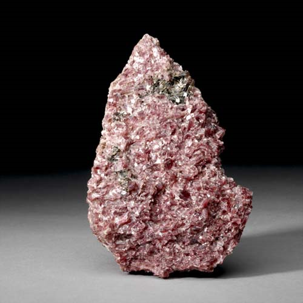
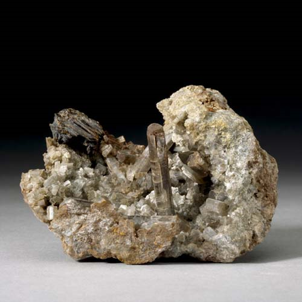
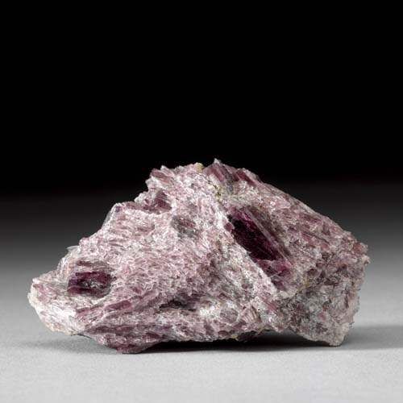

Tremolite - Ca2Mg5Si8O22(OH)2
Double-Chain Inosilicates




Habit: White, gray or lavender to pink. Elongated, stout prismatic or flattened bladed crystals; also fibrous, granular or columnar aggregates. Vitreous luster; transparent to translucent. White streak.
Environment: Formed by contact metamorphism of calcium-magnesium siliceous sediments. Occurs in greenschist facies metamorphic rocks derived from ultramafic or magnesium carbonate rocks.
Etymology: From its occurrence in the Tremola Valley (Val Tremola), Central St. Gotthard Massif, Switzerland.